Wayfinding kiosk · Xense AR
Mall kiosks show you the route, then you walk away and lose it
Field research at two malls, then a kiosk designed to hand the route to your phone.
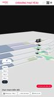
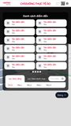
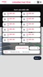
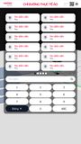
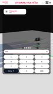
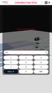
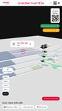

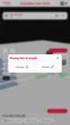
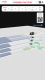
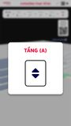
- My part
- User behaviour research, UI design
- With
- The Xense AR product team
- Period
- August 2026
- Tools
- Figma, Google Forms
The problem
Xense AR builds indoor wayfinding. Before drawing a kiosk of our own, I went to see how the ones people already use behave: Hanoi Centre, with a 3D map across floors, and Lotte Mall Tây Hồ, with a flat 2D map.
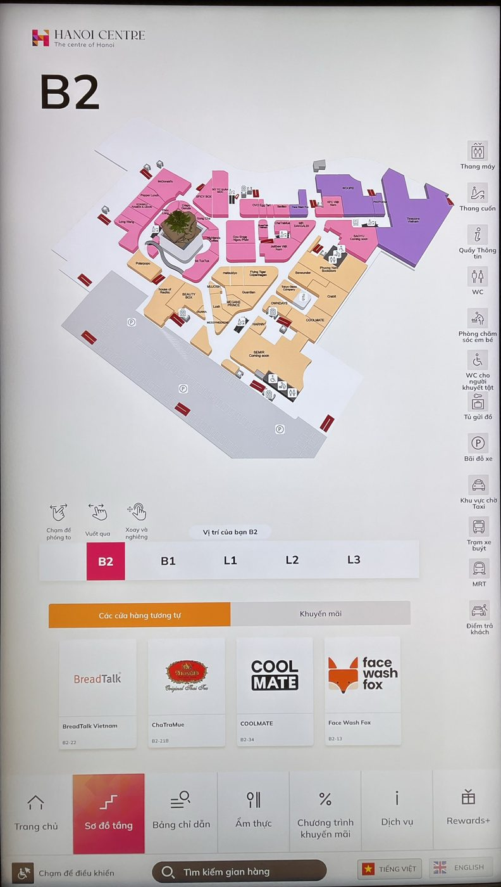
What I found
Both kiosks stop at "look at a map in one place". The route lives on the screen, so it is gone the moment you leave. In a survey of 10 visitors at Hanoi Centre, reading the map across floors scored 2.6 out of 5, and knowing which way to turn after the lift scored 2.7.
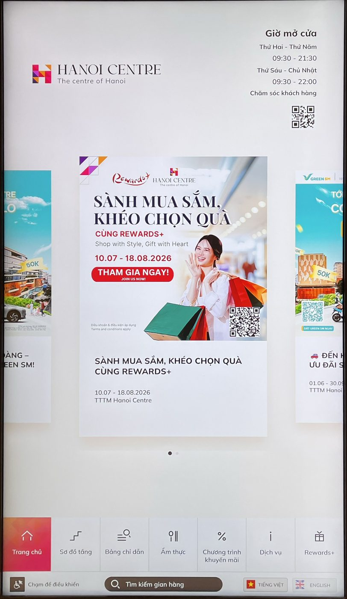
The decision
Option A
Follow Hanoi Centre: a 3D map with a camera that flies along each leg of the route.
Why not: people still pick lift or escalator by hand, the footer is crowded, and the route dies at the kiosk.
Option B
Follow Lotte Mall: a lean 2D map that plays the route as a line.
Why not: the map faces one way while kiosks face another on each floor, and the playback cannot be paused or replayed.
Option C · chosen
Take the short search from Lotte and the 3D overview from Hanoi Centre, then add what neither has: a QR code that carries the route onto your phone.
Why this one: 9 of the 10 people surveyed wanted to take the route with them.
The solution
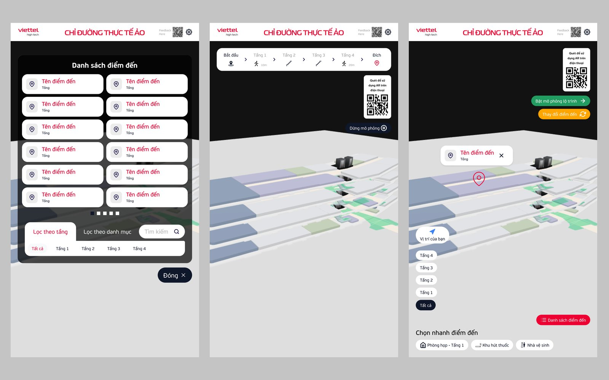
1 Find it fast
A destination list with a keypad search and filters by floor and by category.
2 See the whole route
The floors stack in 3D and the kiosk plays the route through them, asking lift or stairs when the floor changes.
3 Take it with you
The route screen carries a QR code to open AR on your phone, so the directions continue after you leave.
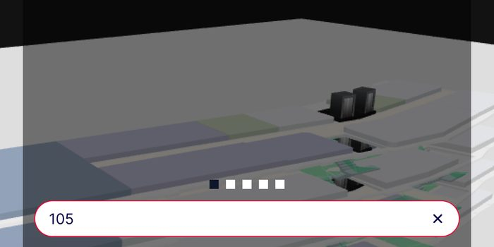
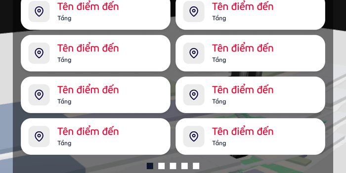
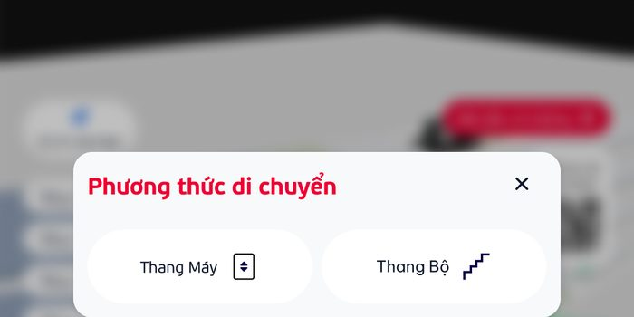
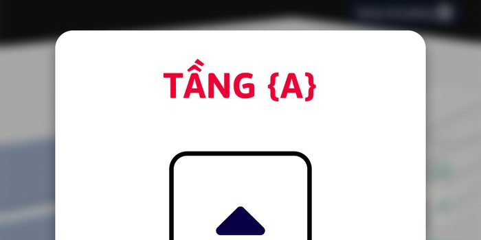
Result
mall kiosks studied on site
visitors surveyed, 20 questions each
kiosk screens designed
What I'd do differently
Ten answers are a signal, not proof. Next time I would test the QR hand-off with people on site before drawing every screen.